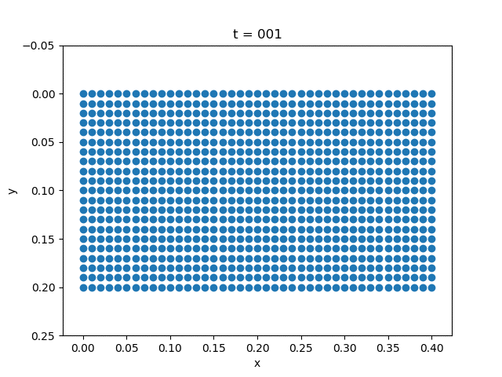

Elastodynamics
The governing equation for elastodynamics is
\[\begin{aligned}
\frac{\partial^2 u}{\partial t^2} &= \mathrm{div}\sigma + f& \Omega\times [0,T]\\
\sigma n &= t & \Gamma_N\times [0,T]\\
u &= u_0 & \Gamma_D\times[0,T]
\end{aligned}\]
The constitutive law is given by
\[\sigma = C\varepsilon\]
We fix the left side of the plate. We use the alpha method [alpha].
| Gravity | External Force |
|---|---|
|  |
β = 1/4; γ = 1/2
a = b = 0.1
m = 40
n = 20
h = 0.01
NT = 200
Δt = 1/NT
bdedge = []
for j = 1:n
push!(bdedge, [(j-1)*(m+1)+m+1 j*(m+1)+m+1])
end
bdedge = vcat(bdedge...)
bdnode = Int64[]
for j = 1:n+1
push!(bdnode, (j-1)*(m+1)+1)
end
M = compute_fem_mass_matrix1(m, n, h)
S = spzeros((m+1)*(n+1), (m+1)*(n+1))
M = [M S;S M]
K = compute_fem_stiffness_matrix(D, m, n, h)
C = a*M + b*K # damping matrix
L = M + γ*Δt*C + β*Δt^2*K
L, Lbd = fem_impose_Dirichlet_boundary_condition(L, bdnode, m, n, h)
a = zeros(2(m+1)*(n+1))
v = zeros(2(m+1)*(n+1))
d = zeros(2(m+1)*(n+1))
U = zeros(2(m+1)*(n+1),NT+1)
for i = 1:NT
T = eval_f_on_boundary_edge((x,y)->0.01, bdedge, m, n, h)
# T = eval_f_on_boundary_edge((x,y)->0.0, bdedge, m, n, h)
T = [zeros(length(T)) -T]
T = compute_fem_traction_term(T, bdedge, m, n, h)
f1 = eval_f_on_gauss_pts((x,y)->0., m, n, h)
f2 = eval_f_on_gauss_pts((x,y)->0., m, n, h)
# f2 = eval_f_on_gauss_pts((x,y)->0.1, m, n, h)
F = compute_fem_source_term(f1, f2, m, n, h)
rhs = F+T
td = d + Δt*v + Δt^2/2*(1-2β)*a
tv = v + (1-γ)*Δt*a
rhs = rhs - C*tv - K*td
rhs[[bdnode; bdnode.+(m+1)*(n+1)]] .= 0.0
a = L\rhs
d = td + β*Δt^2*a
v = tv + γ*Δt*a
U[:,i+1] = d
end
x = []
y = []
for j= 1:n+1
for i = 1:m+1
push!(x, (i-1)*h)
push!(y, (j-1)*h)
end
end
for i = 1:10:NT+1
close("all")
scatter(x+U[1:(m+1)*(n+1), i], y+U[(m+1)*(n+1)+1:end, i])
xlabel("x")
ylabel("y")
k = string(i)
k = repeat("0", 3-length(k))*k
title("t = $k")
ylim(-0.05,0.25)
gca().invert_yaxis()
savefig("u$k.png")
end- alphaHughes, Thomas JR. The finite element method: linear static and dynamic finite element analysis. Courier Corporation, 2012.